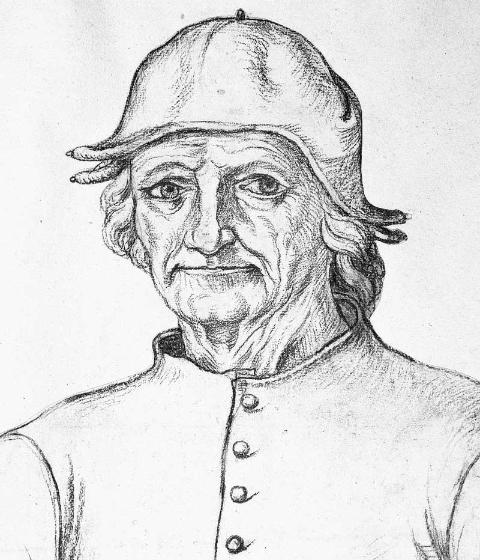
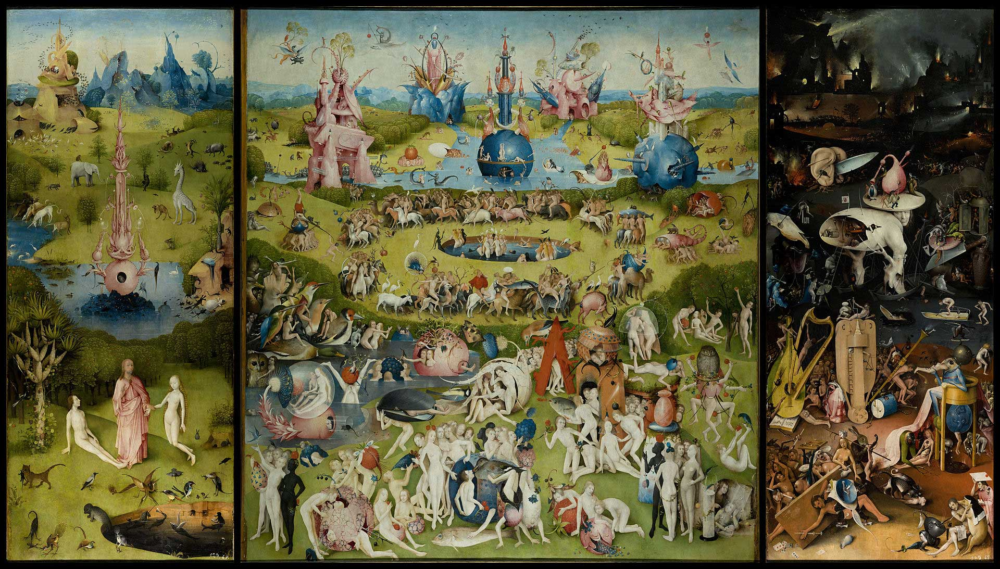
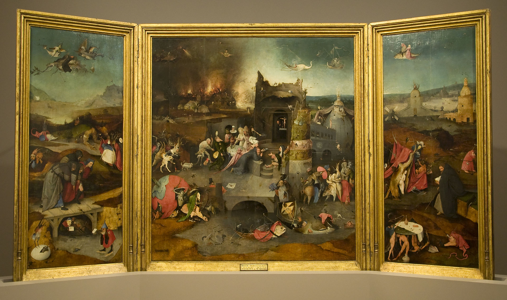
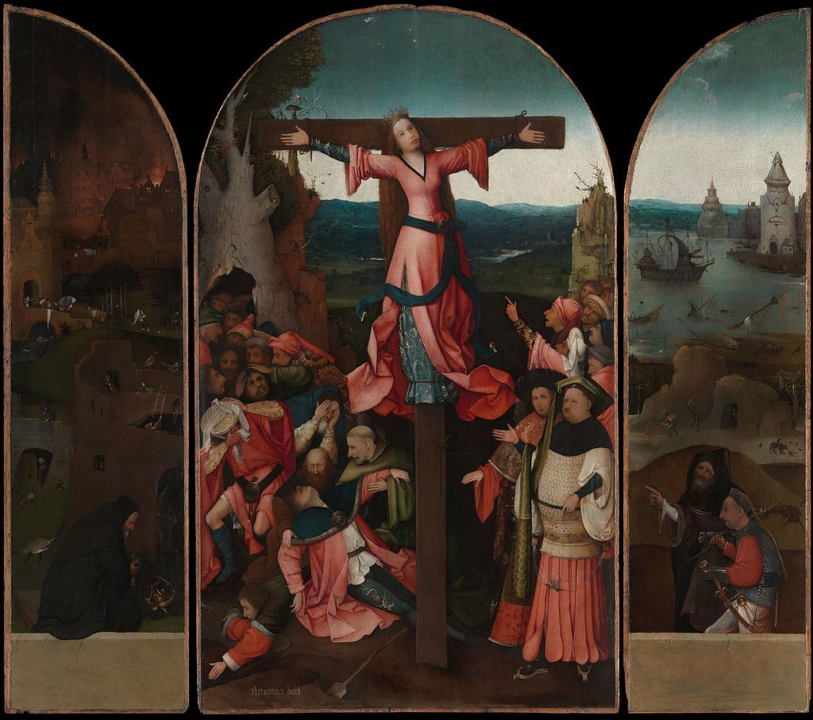
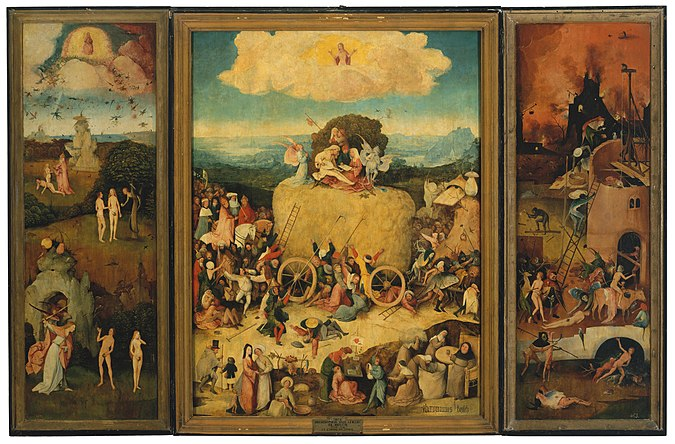
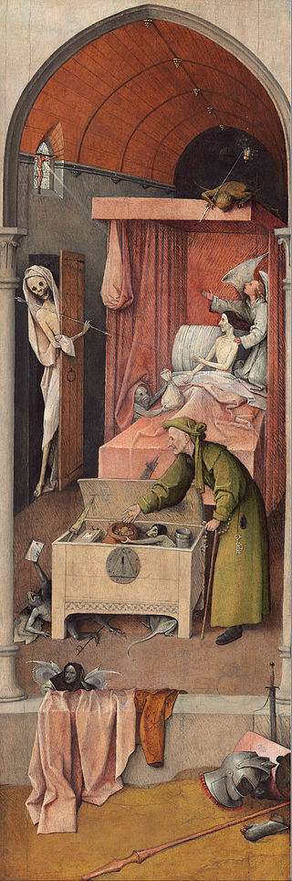
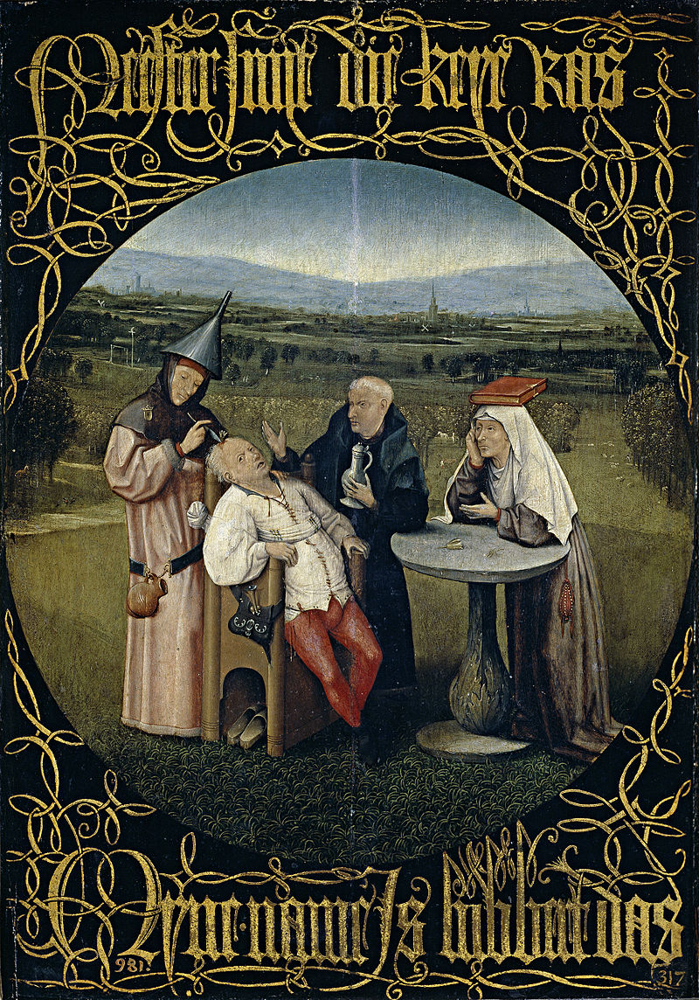
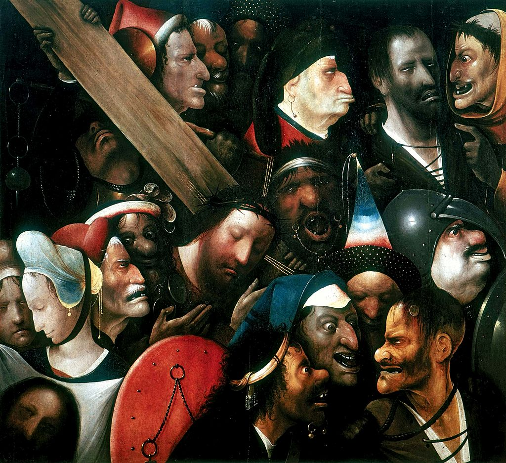

One of the greatest artists of the Northern Renaissance
Tribute page This page was created as part of the Responsive Web Design curriculum by FreeCodeCamp to
Hieronymus Bosch
a Dutch, renaissance painter
"Between Heaven and Hell"
-
Garden of Earthly Delights(Triptych)
- Museo del Prado, Madrid -
-
Temptations of St Anthony(Triptych)
- Museu de Arte Antigua, Lisbon -
-
Crucifixion of St Julia(Triptych)
- Palazzo Ducale, Venice -
-
Haywain(Triptych)
- Museo del Prado, Madrid -
-
Death of the Miser
- National Gallery of Art, Washington, D.C. -
-
Ship of Fools

- Louvre, Paris -
-
The Stone Operation
- Museo del Prado, Madrid -
-
Tabletop of the Seven Deadly Sins and the Four Last Things

- Museo del Prado, Madrid -
-
Allegory of Gluttony and Lust

- Yale University Art Gallery, New Haven, Connecticut -
-
Christ Carrying the Cross
- Museum of Fine Arts, Ghent -